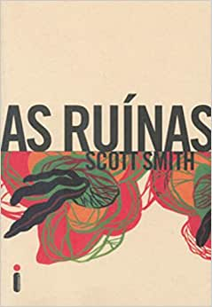
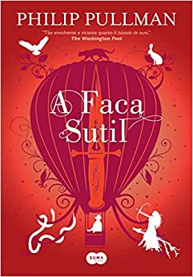
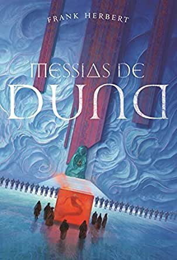

O Anti-Cristo chega à Terra na forma de um garoto que
é tratado como se fosse filho de um casal americano.

As Ruínas
Dois casais de estudantes, Jeff e Amy, Eric e Stacy,
passam férias em Cancún, no México. Tomam sol, mergulham e de
início acham que o ápice da aventura é lidar com tempestades
imprevisíveis e mosquitos insolentes.
O Exorcista
Quatro décadas após chocar o mundo inteiro,
a obra-prima de William Peter Blatty permanece uma metáfora moderna
do combate entre o sagrado e o profano, em um dos romances mais
macabros já escritos.

A faca sutil (Fronteiras do Universo v.2)
O segundo livro da ordem dos livros de Fronteiras do Universo
é A faca sutil, no qual Lyra Belacqua encontra Will Parry ? um fugitivo que
logo se torna um aliado mais que necessário.
A luneta âmbar (Fronteiras do Universo v.3)
O terceiro livro da ordem dos livros de Fronteiras do Universo é A luneta âmbar.
Em todos os universos, forças se reúnem para tomar um lado na audaciosa rebelião de lorde Asriel
contra a Autoridade.

Messias de Duna
Messias de Duna é o segundo volume da série criada por frank herbert.
Ele revela um lado mais humano de seus personagens, além de aprofundar e estender o
universo de Duna, aliando discussões políticas, filosóficas e religiosas à épica história
de poder, vingança e redenção.